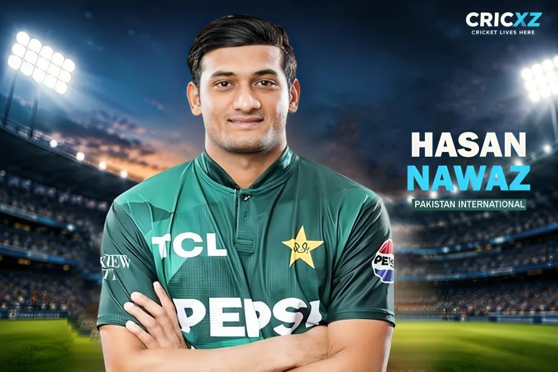

T20I (Updated)
- Matches
- 27
- Runs
- 580
- Highest score
- 105
- Batting average
- 25.22
- Strike rate
- 157.98
- Hundreds
- 1
- Fifties
- 3
- Fours / Sixes
- 31 / 43

Rising from tape-ball cricket to holding the record for the fastest T20I century by a Pakistani batter, Hasan Nawaz is a generational power-hitter. His clean striking and towering sixes have made him a global franchise phenomenon.
While chasing a massive target of 216 against India, Hasan Nawaz played the innings of his life, smashing 96 runs off just 51 deliveries. Missing his well-deserved century by just 4 runs, his knock included 7 towering sixes and 5 boundaries, single-handedly keeping Pakistan in the hunt until the death overs.
Statistics updated: 3 October 2026
Primary career statistics source: PCB Official Records & CricXZ Live Match Data
Raised in an environment with minimal cricket infrastructure, Hasan Nawaz initially honed his skills playing tape-ball cricket before moving to Islamabad to pursue formal training. At just 14, he joined the Lashings Cricket Club and steadily progressed through the Islamabad Cricket Association (ICA) system.
His domestic breakthrough came in 2022 with the Mirpur Royals, leading to a PSL call-up for Islamabad United. However, 2025 was his true breakout year. Playing for the Quetta Gladiators, he amassed 399 runs in 10 innings, including a stunning maiden PSL century. This form earned him an immediate national call-up for the white-ball tour of New Zealand.
In just his second week of international cricket, Hasan shattered records by smashing an unbeaten 105 off 45 balls against New Zealand at Hagley Oval. He became the youngest Pakistani to score a T20I hundred and recorded the fastest T20I century by a Pakistan batter. He later expanded his dominance globally, turning out for the Antigua and Barbuda Falcons in the 2026 CPL, scoring a destructive 76 off 48 balls against TKR.
16 March 2025
Against New Zealand at Hagley Oval, Christchurch.
August 2025
Against West Indies (scored an unbeaten 63 in a successful run chase).
2023
For Islamabad United (later starred for Quetta Gladiators in 2025).
Smashed 96 off 51 balls, hitting 7 massive sixes in the high-pressure Gold Medal match against India.
Blasted 105* off 45 balls against New Zealand, setting the record for the fastest T20I century by a Pakistani.
Became the youngest Pakistani batter to score a century in T20 Internationals.
Scored his first Pakistan Super League century while representing the Quetta Gladiators.